We sincerely thank the editor and all reviewers
for their valuable feedback that we have used to improve the quality of our
manuscript. Based on the reviewers’ comments, we have thoroughly revised and
refined the manuscript. All revisions have been highlighted in blue and bold in
the revised version for easy reference. We believe these revisions have further
enhanced the manuscript’s completeness, rigor, and readability. We hope the
revised manuscript will meet with the reviewers’ approval.
Responses to Reviewer 1’s Comment
Comments & Responses
Comment 1.1:
Response
1.1:
We
feel great thanks for your professional review work on our article. We
agree that visual comparison alone is insufficient to fully demonstrate the
advantages of the proposed method. Therefore, in Figure 1 of the revised
manuscript, we have added visualizations of object detection results
corresponding to the fusion results of each method, and have revised the
analysis in the main text accordingly. The changes are as follows:
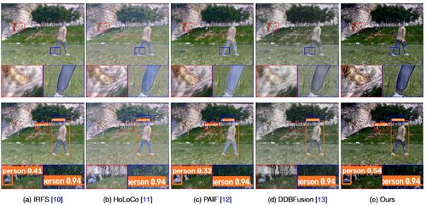
Figure 1:
Qualitative comparison results between our method and various state-of-the-art
fusion approaches.
We have added, as
detailed in page 3\ Introduction.
Comment 1.2:
The
presentation in Figure 2 is currently overly cluttered, and the overall
workflow, network structure, and directional indications are not sufficiently
clear. It is recommended to redraw the figure to clearly present the
corresponding operations and information flow.
Response 1.2:
We gratefully
appreciate for your valuable suggestion comment. We have revised Figure 2 by
removing redundant information-transfer arrows to reduce visual clutter.
Additionally, we have changed “Gradient Structure Guidance” to “Text�CGradient
Guidance Features” and added the annotation “” to clarify that this is a guidance map that
integrates text semantic priors with gradient information. These revisions make
the figure more concise and help readers better understand the relevant
operations and information-transfer relationships. The revisions are as
follows.
|
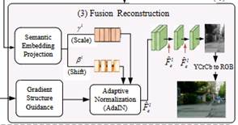 |
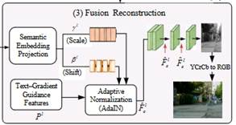 |
|
(a) Before the revision |
(b) After the revision |
Figure 2:
Schematic illustration of the changes made to Figure 2 in the revised draft.
We have added, as
detailed in page 8\ Overall
framework\ Method.
Comment 1.3:
The
manuscript should provide the complete input to the CLIP text encoder and
clearly explain the rationale behind this design.
Response 1.3:
Thank you for pointing out this problem in
manuscript. We have added the following clarification to the revised draft: We
use positive textual descriptions such as “a vivid image with a clear
background and obvious objects” as semantic prompts to provide textual prior
information for the fusion process. All input images use the same prompt
settings to ensure shared global conditions and maintain consistency in the
text-guided objectives. The revision is as follows:
“Given a semantic prompt T, we use positive
text descriptions such as “a vivid image with a clear background and obvious
objects” to construct semantic prompts, which serve as textual prior
information for the fusion process. All input images use the same prompt
settings to provide a shared global context and maintain consistency in the
text-guided objectives.”
We have added, as
detailed in page 11\ A semantic
modulation module guided by semantic priors in visual language\ Method.
Comment 1.4:
As
shown in Figure 3, it is unclear why a neural network is employed to predict
image gradients instead of directly obtaining them using conventional gradient
operators. In addition, the input image appears to be AI-generated, and its
source should be clarified.
Response 1.4:
Thank you for the above suggestions. We employed a neural network to
construct learnable, structure-guided representations tailored for fusion
tasks. Traditional operators such as the Sobel operator calculate local
intensity changes using fixed differential kernels, whereas the network shown
in Figure 3 integrates neighborhood information through multi-layer
convolutions, nonlinear mappings, and repeated residual operations to generate
a single-channel structural response. After undergoing a learnable mapping,
this response is combined with a text-guided map to serve as the conditional
input for subsequent fusion feature modulation.
Thank you for bringing this to our attention. To ensure the image source
is clear and verifiable, we have replaced the input example in Figure 3 with
the original infrared image labeled 00379D from the MSRS dataset and have added
the dataset source and image ID to the figure caption in the revised version.
We have added, as
detailed in page 11\ A semantic
modulation module guided by semantic priors in visual language\ Method.
Comment 1.5:
For the
gradient prediction network defined in Equation (9), the manuscript should explain
how its loss function and supervision or constraint objective are constructed.
Response 1.5:
Thank you for your
valuable feedback on our manuscript. As an intermediate guidance branch of the
fusion model, this network’s output influences the final fused image through
feature modulation. During training, the overall fusion loss is backpropagated
along this computational path to jointly update the parameters of this branch;
therefore, training constraints are already provided, and there is no need to
define a separate loss for it. The goal of this branch is to learn structural
guidance representations that facilitate fusion, rather than to perform a
pixel-by-pixel fit to the gradient map generated by a fixed operator; thus, no
separate gradient prediction loss is defined.
We have added, as
detailed in page 11-12\ A semantic
modulation module guided by semantic priors in visual language\ Method.
Comment 1.6:
Response
1.6:
We gratefully
appreciate for your valuable suggestion comment. The two instances of the value
10 in Equation (10) serve different purposes. The first is a multiplicative
coefficient used to scale the input to the first sigmoid, making it more
sensitive to changes in the input near the transition center. The second instance
is an additive offset that shifts the response curve of the second Sigmoid
function to the left, moving its transition center from (0) to (-10). Both
values are empirically determined and are used to adjust the steepness of the
response and the transition position, respectively. We have added an
explanatory note following Equation (10) in the revised manuscript.
We have added, as
detailed in page 12\ A semantic
modulation module guided by semantic priors in visual language\ Method.
Comment 1.7:
The
fusion methods included in the comparative experiments are relatively outdated.
It is suggested to appropriately include more recent image fusion methods for
comparison.
Response 1.7:
Thank you for your
comments.. We have included “SETFusion,”
published by Tang in Pattern Recognition in 2026, in the revised
manuscript. This method proposes an end-to-end framework for fusing infrared
and visible-light images based on semantic Transformers. It preserves the
complementary semantic information of the two modalities through a pyramidal
semantic Transformer and a multi-level semantic Transformer, and employs a
visual information fidelity loss for unsupervised training.
We have
supplemented the comparison with SETFusion in the
following three aspects.
(1)
Performance
Comparison Analysis of Fusion Methods on the MSRS Dataset
|
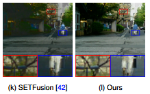 |
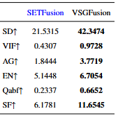 |
Figure 3: Comparison of the performance of
our method and SETFusion on the MSRS Dataset.
(2)
Performance Comparison Analysis of Fusion
Methods on the M3FD Dataset
|
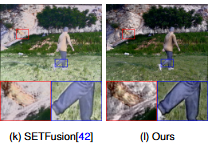 |
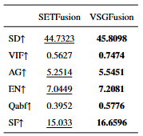 |
Figure 4: Comparison
of the performance of our method and SETFusion on the
M3FD dataset.
(3) Analysis
of Semantic Segmentation Performance
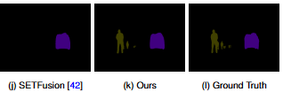
Figure5: Comparison of the performance of
our method and SETFusion in semantic segmentation.
Compared to SETFusion, our method produces clearer fused images and
achieves higher quantitative metrics such as SD and VIF. Furthermore, when the
fused images generated by both methods are used for downstream semantic
segmentation, our method yields better segmentation results.
We have added, as
detailed in page 17-23 \ EXPERIMENTS.
Comment 1.8:
It is
suggested to further present qualitative comparison results for multiple scenes
on the datasets used in this work
Response 1.8:
We gratefully
appreciate for your valuable suggestion comment. Building on our previous
qualitative comparison, we have added the fusion results for MSRS test set
scene #00379D (Figure 6) and M3FD dataset scene #01079 (Figure 7). Both figures
present side-by-side comparisons of the infrared images, visible light images,
and the fusion results from each method, along with close-ups of the same
locations. We have also included a corresponding analysis in the revised
manuscript, comparing how well each method preserves pedestrian outlines,
vegetation textures, and roadside structural details across different scenes.
Figure6: Qualitative comparison of our
method versus nine state-of-the-art fusion methods on scene #00379D within the
MSRS test dataset.
Figure 7:Visualization
output of different fusion methods on M3FD dataset with scene as #01079.
We have added, as
detailed in page 19 and 21\ EXPERIMENTS.
Comment 1.9:
The
manuscript should provide a more detailed analysis of the basis for selecting
the different hyperparameters in Equation (21).
Response 1.9:
Thank you for your
valuable feedback on our manuscript. To address this issue, we have added
comparative experiments and the rationale for selecting the weight parameters
in Equation (21). The details are as follows:
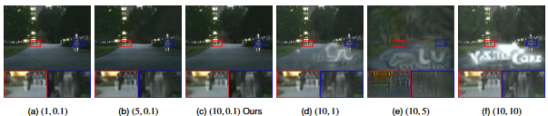
Figure 8:
Comparison of fused images generated after retraining under different loss
function parameter settings (, ).
In Equation (21), and control
the weights of the gradient structure loss and the visual-language semantic
loss, respectively. To analyze the impact of these two parameters on the fusion
results, we fixed one parameter while adjusting the other, and retrained the
model for each set of settings. Specifically, we fixed = 0.1 and
set to 1, 5,
and 10; we also fixed = 10 and
set to 0.1, 1,
5, and 10. The fusion results corresponding to these six sets of parameters are
shown in Figure 8.
As shown in Figure
8(a)�C(c), when = 0.1, the
fused images under different settings
are relatively similar in terms of overall brightness and scene structure, with
relatively limited differences between local objects and background textures.
This indicates that the model exhibits relatively stable visual performance
within the tested range of gradient loss weights. In contrast, when =10 is fixed and is
increased from 0.1 to 1, 5, and 10, abnormal bright spots and spurious textures
appear in the images to varying degrees, affecting the natural appearance of
the road background and the clarity of local structures. This suggests that,
under the current loss combination, increasing the semantic loss weight does
not necessarily improve fusion quality; overly strong semantic constraints may
interfere with the preservation of pixel and structural information.
Based on the above
qualitative comparison, this paper adopts =10 and =0.1 as the default configuration. This setting allows
both gradient-based structural supervision and task-level semantic guidance to
participate in the optimization process, while avoiding the noticeable
artifacts that appear when the semantic loss weight is set too high, as
illustrated in the figure.
We have added, as detailed
in page 26\ Sensitivity Analysis of Loss Weights\ EXPERIMENTS.
Comment 1.10:
The
related work section could provide a more focused discussion of cross-modal feature
interaction and semantic guidance in image fusion. For example, MulFS-CAP: Multimodal Fusion-Supervised Cross-Modality
Alignment Perception for Unregistered Infrared-Visible Image Fusion and Missing
No More: Dictionary-Guided Cross-Modal Image Fusion under Missing Infrared
offer relevant perspectives on cross-modal feature representation and fusion.
Discussing these studies could help clarify the differences between existing
approaches and the proposed method, particularly in terms of feature interaction
and semantic information utilization.
Response 1.10:
Thank you for
pointing out this problem in manuscript. We have added a discussion of MulFS-CAP and Missing No More to the relevant section of
the revised manuscript and explained how they differ from our method in terms
of the purpose of cross-modal feature interaction and the role of semantic
priors.
We have added, as
detailed in page 6\ Visual Language-Driven Image Fusion\ Related works.
Comment 1.11:
Although
the manuscript addresses image fusion in general, its experimental evaluation
is limited to infrared-visible image fusion. Image fusion also includes other important
tasks, such as medical image fusion, multi-focus image fusion, and remote sensing
image fusion. The authors are therefore encouraged to evaluate the
applicability of the proposed method to these tasks or clarify its intended
scope. In addition, the related work section could briefly cover representative
approaches in these areas, such as UniFuse: A Unified
All-in-One Framework for Multi-Modal Medical Image Fusion Under Diverse
Degradations and Misalignments and BSAFusion: A
Bidirectional Stepwise Feature Alignment Network for Unaligned Medical Image
Fusion, along with 1relevant methods for remote sensing and multi-focus image
fusion.
Response 1.11:
Thank you for your
comments. We have clarified in the “Limitations” section of the revised
manuscript that, at this stage, our method is focused on the fusion of infrared
and visible light images; we will explore its applicability to tasks such as
medical image fusion, multi-focus image fusion, and remote sensing image fusion
in the future. Additionally, we have added a discussion of two representative
medical image fusion algorithms, UniFuse and BSAFusion, to the “Related Work” section.
We have added, as
detailed in page 5\ Related works and page 30\ Limitations.
Responses to Reviewer 2’s Comment
Comments & Responses
Comment 2.1:
The spatial role of the vision-language prior requires stronger justification. The CLIP text embedding is essentially a global semantic representation, yet the paper claims region-adaptive modulation. Additional visualization or quantitative analysis is needed to demonstrate how global text priors produce meaningful spatially localized guidance.
Response 2.1:
We feel great thanks for your professional
review work on our article. We use CLIP text embeddings to provide global
semantic conditions. The region-adaptive modulation referred to in the paper
occurs within the fusion network. Specifically, we first convert text vectors
into a two-dimensional condition map via a learnable mapping, and then combine
it with the structural responses of the infrared and visible light images on a
pixel-by-pixel basis. Subsequently, the semantic embedding modulation (SAM)
modules at each layer generate spatially varying scaling coefficients and
offset coefficients () and ( 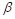
We visualized the features of the three SEM modules before and
after modulation to illustrate how the feature responses change at different
locations. As shown below:
To visually analyze how visual language priors influence changes in
the spatial responses of decoded features during modulation, we performed a
visual comparison of the input and output features of the three semantic
embedding modules (SAMs) in the decoding stage. As shown in Figure 8, each test
sample displays six feature maps, corresponding to the features before and
after processing by SAM1, SAM2, and SAM3, respectively, to examine changes in
spatial responses at different decoding stages.
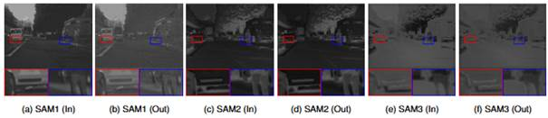
Figure 1:Visual
comparison of the input and output features of the three SAM modules in the
decoding phase.
In the figure, we visually compare the input and output features of
the three SAM modules during the decoding stage. The red and blue boxes
highlight the vehicle front and pedestrian regions, respectively, with
corresponding local magnified views shown below. Comparing Figures 1(a) and (b)
reveals that the features processed by SAM1 exhibit different relative
grayscale distributions, with changes in the horizontal structure of the
vehicle front and the contrast between the pedestrian’s legs and the
surrounding background. In Figures 1(c) and (d), as well as Figures 1(e) and
(f), the input and output features are generally more similar; the road layout,
vehicle structure, and pedestrian contours remain consistent, with changes
primarily manifesting as subtle adjustments in local grayscale and edge
responses. These results indicate that SAM exhibits different modulation
effects at different decoding stages: the changes in response before and after
SAM1 processing are relatively intuitive, while SAM2 and SAM3 primarily adjust
local responses while preserving the existing spatial structure. The
differences in the spatial distribution of the input and output features across
the three modules demonstrate SAM’s ability to differentially modulate decoded
features at various locations, as well as the effectiveness of semantic priors
in the fusion process.
We have added, as
detailed in page 26\ Analysis of Spatial Feature Modulation in the Semantic
Embedding Module\ EXPERIMENTS.
Comment 2.2:
Computational complexity should be reported
explicitly. Since VSGFusion introduces CLIP-based
semantic priors, gradient prediction, and spatial adaptive modulation, Params,
FLOPs, inference time should be provided.
Response 2.2:
Thank you for pointing out this problem in manuscript. We have added the
number of model parameters (Params), floating-point operations (FLOPs), and
average inference time for VSGFusion to the
“Limitations” section of the revised draft. As shown below:
Table 1: Comparison of our method with several other
image fusion methods in terms of modeling efficiency.
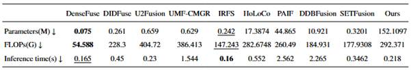
Our method introduces CLIP-based semantic priors, a gradient prediction
branch, and a spatially adaptive modulation module, which correspondingly
increase the model’s memory requirements and computational overhead. To
quantify these costs, we report the number of model parameters, the number of
floating-point operations, and inference time in Table 1. Testing was conducted
on an NVIDIA Tesla P40 GPU using FP32 precision, with a batch size of 1 and
input consisting of infrared and visible-light image pairs with a resolution of
(480 × 640). The count of model parameters includes frozen CLIP parameters; the
number of floating-point operations was estimated using the aten
backend in ptflops, calculated based on the
convention that one multiply-add operation corresponds to two floating-point
operations. Inference time was measured only for the model’s forward pass,
including the text encoding process for each image pair, but excluding image
preprocessing, postprocessing, and file I/O. Under these settings, our method
had 152.1097 M parameters, a floating-point operation count of approximately
292.371 GFLOPs, and an average inference time of 0.218 s.
The above results indicate that our method still suffers from the
limitations of a large parameter size and high computational overhead, which
may restrict its deployment on devices with limited storage and computing
power, as well as in high-frame-rate application scenarios. Future research
will focus on lightweighting the semantic encoder, knowledge distillation, and
streamlining the fusion module structure to further reduce the number of model
parameters, computational load, and inference latency while maintaining fusion
quality.
We have added, as
detailed in page 31\ Limitations\ EXPERIMENTS.
Comment 2.3:
The prompt-design strategy is insufficiently
validated. The current prompt analysis is mainly qualitative and based on a
single example. The authors should report the exact prompts and provide
quantitative prompt-sensitivity experiments to demonstrate robustness to prompt
wording and semantic mismatch.
Response 2.3:
We gratefully appreciate for your valuable suggestion comment. In the
revised version, we will include the original English text of the prompt and
add a corresponding quantitative comparison, as shown below:
In this context,the text prompt for P1 is “A
dull image with a cluttered background and indistinct or obscured objects”; the
prompt for P2 is “A poorly captured image with noise, blur, and no clear
subject”; the prompt for P3 is “An image where the main object is barely visible
or obscured”; the prompt for P4 is “This is an ordinary picture”; and the
prompt for P5 is “A somewhat clear image with minor noise and blur, but the
main subject remains partially ambiguous”.
Table 2 presents the results of a quantitative comparison between our
method and five different semantic text-guided methods (P1�CP5) on the MSRS test
set. As can be seen, our method performs best on four metrics: SD, VIF, EN, and
Qabf. P1 achieved the highest values on the AG and SF
metrics, but this is primarily due to the presence of some blurriness and noise
in the generated images. Therefore, overall, our method outperforms the others.
The experimental results above demonstrate the effectiveness of text semantics
in our method.
Table 2:Shows the quantitative comparison results between our
method and five different semantic text guidance methods (P1 - P5) on the MSRS
test set.
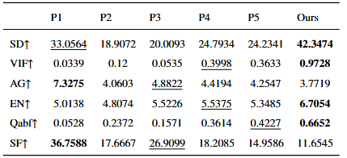
We have added, as
detailed in page 24\ The Impact of Visual Language Semantic Priors on the
Fusion of Infrared and Visible Images\ EXPERIMENTS.
Comment 2.4:
To place the current study within a broader research
context, we suggest citing the following relevant papers to enrich the research
background.
(1)SGDFuse:
SAM-Guided Diffusion Model for High-Fidelity Infrared and Visible Image Fusion
(2)Fscmf:
A dual-branch frequency-spatial joint perception cross-modality network for visible
and infrared image fusion
Response 2.4:
Thank you for your
comments. We have added references to and a discussion of SGDFuse
and FSCMF in the introduction section of the revised draft.
We have added, as
detailed in page 2\ Introduction.
Responses to Reviewer 3’s Comment
Comments & Responses
Comment 3.1:
Section 2.3 discusses PromptFusion,
Text-IF, ControlFusion, and DSPFusion,
but none are included in the experiments. The current comparisons do not
sufficiently demonstrate
the advantages of the proposed semantic
guidance mechanism.
Response 3.1:
We agree with your
suggestion and have included the SETFusion study
published in 2026 in the comparative analysis; we have also added the
corresponding experimental results and analysis to the revised manuscript. The
details are as follows:
We have
supplemented the comparison with SETFusion in the
following three aspects.
(1)
Performance
Comparison Analysis of Fusion Methods on the MSRS Dataset
|
|
|
Figure 1: Comparison of the performance of
our method and SETFusion on the MSRS Dataset.
(2)
Performance Comparison Analysis of Fusion
Methods on the M3FD Dataset
|
|
|
Figure 2: Comparison
of the performance of our method and SETFusion on the
M3FD dataset.
(3) Analysis
of Semantic Segmentation Performance
Figure 3: Comparison of the performance of
our method and SETFusion in semantic segmentation.
Compared to SETFusion, our method produces clearer fused images and
achieves higher quantitative metrics such as SD and VIF. Furthermore, when the
fused images generated by both methods are used for downstream semantic
segmentation, our method yields better segmentation results.
We have added, as
detailed in page 17-23 \ EXPERIMENTS.
Comment 3.2:
Section 3.3 uses quality descriptions such as
“clear objects, distinct background, natural scene,” whereas Section 3.5
describes the prompts as learnable. Please clarify whether the method uses
fixed text, image-specific descriptions, or learnable prompts, and explain how
the prompts are obtained during training and testing.
Response 3.2:
Thank you for
pointing out this problem in manuscript. Our method uses a predefined, fixed
text prompt, and all image pairs share the same text prompt. During training,
we use positive text prompts such as “a vivid image with a clear background and
obvious objects” to extract textual semantic priors via the CLIP text encoder.
At the same time, the visual-language semantic loss constrains the fusion of
visual features in the images, aligning them with the textual features of the
prompt in the CLIP semantic space. During testing, the model uses the semantic
priors derived from the same fixed prompt to guide the generation of the fused
images.
In the revised
version, we have explicitly provided the original text of the fixed prompt and
its usage during training and testing in Section 3.5, and we have corrected
“learnable prompts” to “text prompts” in Section 3.5.
We have added, as
detailed in page 17-23\ Visual Language-Driven Image Fusion\ EXPERIMENTS.
Comment 3.3:
Section 4 reports the optimizer, learning rate,
and batch size, but omits the training and test sample counts, data splits,
training epochs, input size, and hyperparameter settings.
Response 3.3:
We would like to
thank the reviewers for pointing out that the description of the experimental
setup in Section 4 was incomplete. In the revised version, we have added
details regarding data segmentation, sample size, and input dimensions. The
specifics are as follows:
We followed the
original split of the MSRS dataset, using 1,083 pairs of infrared and
visible-light images for training and 361 pairs for testing. Both training and
testing retained the original resolution of the MSRS images (480 × 640) pixels
(height × width). The M3FD test set consists of 300 image pairs, with an input
size of 1024 × 768. In the total loss, the weight () for the gradient structure loss is set to 10, and
the weight ( 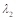
We have added, as
detailed in page 17 \ EXPERIMENTS.
Comment 3.4:
The method includes CLIP and an additional gradient prediction
network, but no parameter count, computational complexity, or inference time is
reported. These results are needed to assess the computational cost of the
performance gains.
Response 3.4:
We are gateful for the suggestion. We have
added the number of model parameters (Params), floating-point operations
(FLOPs), and average inference time for VSGFusion to
the “Limitations” section of the revised draft. As shown below:
Table 1: Comparison of our method with several other
image fusion methods in terms of modeling efficiency.
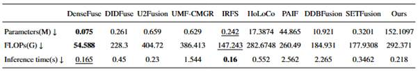
Our method introduces CLIP-based semantic priors, a gradient prediction
branch, and a spatially adaptive modulation module, which correspondingly
increase the model’s memory requirements and computational overhead. To
quantify these costs, we report the number of model parameters, the number of
floating-point operations, and inference time in Table 1. Testing was conducted
on an NVIDIA Tesla P40 GPU using FP32 precision, with a batch size of 1 and
input consisting of infrared and visible-light image pairs with a resolution of
(480 × 640). The count of model parameters includes frozen CLIP parameters; the
number of floating-point operations was estimated using the aten
backend in ptflops, calculated based on the
convention that one multiply-add operation corresponds to two floating-point
operations. Inference time was measured only for the model’s forward pass,
including the text encoding process for each image pair, but excluding image
preprocessing, postprocessing, and file I/O. Under these settings, our method
had 152.1097 M parameters, a floating-point operation count of approximately
292.371 GFLOPs, and an average inference time of 0.218 s.
The above results indicate that our method still suffers from the
limitations of a large parameter size and high computational overhead, which
may restrict its deployment on devices with limited storage and computing
power, as well as in high-frame-rate application scenarios. Future research
will focus on lightweighting the semantic encoder, knowledge distillation, and
streamlining the fusion module structure to further reduce the number of model
parameters, computational load, and inference latency while maintaining fusion
quality.
We have added, as
detailed in page 31\ Limitations\ EXPERIMENTS.
Comment 3.4:
The authors are encouraged to discuss TextFuse in the related work, as it also uses textual
information to guide infrared and visible image fusion. This would help clarify
the differences between the proposed method and existing text-guided
approaches. Lv G, Sima C, Wang J, et al. TextFuse: Text Information Guided Infrared and Visible Image
Fusion[J]. IEEE Transactions on Multimedia, 2026.
Response 3.4:
Thank you for your
comments. We have added a reference to and discussion of TextFuse
in Section 2.3 of the revised draft.
We have added, as
detailed in page 6\ Visual Language-Driven Image Fusion \ Related works.
Responses to Reviewer 4’s Comment
Comments & Responses
Comment 4.1:
If the text prompt is fixed as "clear
objects, distinct background, natural scene", how can the so-called
semantic prior carry any scene-specific information beyond a generic quality
descriptor?
Response 4.1:
We feel great
thanks for your professional review work on our article. We agree that the
fixed prompt “clear objects, distinct background, natural scene” primarily
describes the desired fusion result and does not include object categories,
spatial locations, or spatial relationships specific to the current scene. What
we refer to as “visual-language semantic priors” refers to the encoding of
these applied task-relevant descriptions through pre-trained visual-language
models to form a shared global guidance signal, rather than scene descriptions
generated for each input image.
Comment 4.2:
Equation 14 computes cosine similarity between e_i and e_i, so is the semantic
loss actually comparing the fused image to the text embedding at all?
Response 4.2:
Thank you for your
comments.. Equation (14) calculates the cosine
similarity between and , rather than the similarity between and itself. Here,
represents the visual features of the fused image, and represents the text-based semantic a priori features.
Comment 4.3:
The VSP ablation shows EN rising from 5.9704 to
6.5022, yet no experiment isolates whether this gain survives when the CLIP
text encoder is replaced by a random embedding.
Response 4.3:
We totally
understand the reviewer's concern. We have added a control experiment using
random embeddings. The results show that replacing the output of the CLIP text
encoder with random embeddings leads to a decline in image quality and even
introduces artifacts. Specifically:
The Random Noise
mask replaces the entire modulation mask directly with a random tensor of the
same size as the original mask. The value at each position in the tensor is
independently sampled from a uniform distribution on the interval ([0,1)). This
control is used to examine changes in fusion performance after replacing the
entire mask. In the Random Semantic Replacement (RandText)
setting, a sentence is randomly selected from a predefined set of task-agnostic
image descriptions, such as “A vivid image of a kitchen counter with clearly
visible bowls, plates, and utensils.” This description is encoded using a
frozen CLIP text encoder, and the L2 norm of the resulting vector is adjusted
to match that of the original semantic vector, which is then used to replace
the original semantic prior.
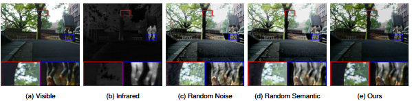
Figure 1:Comparison of fusion results for MSRS test set scene #00055D
(random noise masking, random semantic replacement, and our method)
As shown in Figure
1, in scene #00055D of the MSRS test set, when a random noise mask is, the
foreground road surface exhibits a fairly noticeable grainy texture. When
random semantic replacement is used, the branches and leaves next to the tree
trunk within the red box appear overly bright, and the local contrast is
reduced. In contrast, our method produces smoother brightness transitions on
the road surface, maintains clear boundaries between the tree trunk and the
background foliage, and preserves the outline of the pedestrian within the blue
box. These experiments demonstrate that the choice of semantic priors directly
affects the quality of the fused image and also illustrate that text semantics
can effectively guide the fusion process between infrared and visible light
images.
We have added, as
detailed in page 27-28\ The Impact of Semantic Priors on Fusion Performance \
Ablation experiments.
Comment 4.4:
The gradient prediction network in Figure 3 is
a trained CNN, so what distinguishes it from a learned edge detector, and why
is it called gradient saliency rather than a learned feature?
Response 4.4:
We gratefully appreciate
for your valuable suggestion comment. In our approach, the output of this
branch is not used for edge classification or edge probability prediction;
rather, after undergoing a response transformation, it combines with the text
prior to form spatial modulation conditions used to adjust the multi-layer
fused features.
The term “gradient
salience” is used in this paper to highlight the selective emphasis this
response places on gradient-related structural information. Here, “salience”
refers to its role in emphasizing responses in spatial guidance, while
“gradient” reflects the branch’s design intent to capture local structural
changes and edge details; it does not imply that the CNN output is equivalent
to the computational result of an explicit gradient operator.
Comment 4.5:
Table 1 shows DIDFuse
reaching AG 2.1758 and EN 5.4718 while VSGFusion
reaches 3.7719 and 6.7054, but no statistical test or variance is reported for
any metric.
Response 4.5:
We totally understand the reviewer's concern. We have added the standard
deviations for each evaluation metric in Tables 2 and 3 and reported the
results in the format “mean ± standard deviation.” The results are shown below:
Table 1:Quantitative comparison of our method with nine
state-of-the-art fusion methods on the MSRS test set. Results are reported as
mean ± standard deviation.
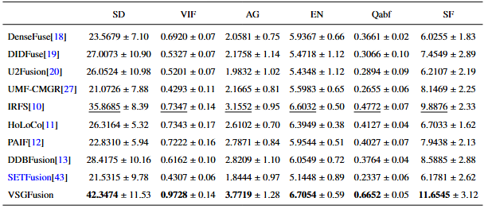
Table 2:Shows the results of quantitative comparative analysis of
various fusion methods on M3FD dataset. Results are reported as mean ± standard
deviation.
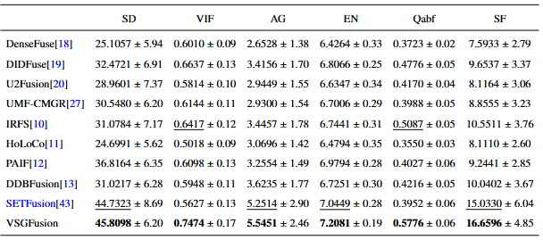
We have added, as detailed in page 20 and page 23 \ EXPERIMENTS.
Comment 4.6:
The manuscript claims submission to Engineering
Applications of Artificial Intelligence while the cover letter and template
belong to Optics and Laser Technology, so which
venue is this actually submitted to?
Response 4.6:
We were really
sorry for our careless mistakes. The journal to which this manuscript was
actually submitted is Optics and Laser Technology. The inclusion of information
regarding Engineering Applications of Artificial Intelligence in the submission
letter and template was an oversight on our part while preparing the submission
materials, and we sincerely apologize for this. We have corrected the journal
information in all relevant materials.
Comment 4.7:
Section 4.4 compares five prompts P1-P5, yet
none is a counterfactual pair that keeps scene and objects fixed while only
changing the action or object described.
Response 4.7:
Thank you for pointing out this problem in manuscript. The text priors in
this paper are primarily used to express overall quality preferences for the
fusion results, such as clear objects, distinct backgrounds, and
natural-looking images. Therefore, P1�CP5 in Section 4.4 are designed around
attributes such as clarity, object visibility, noise, and blurriness, with the
aim of analyzing the model’s fusion performance under different
quality-oriented text conditions, rather than testing its fine-grained discrimination
ability regarding specific action descriptions. In this context,the
text prompt for P1 is “A dull image with a cluttered background and indistinct
or obscured objects”; the prompt for P2 is “A poorly captured image with noise,
blur, and no clear subject”; the prompt for P3 is “An image where the main
object is barely visible or obscured”; the prompt for P4 is “This is an
ordinary picture”; and the prompt for P5 is “A somewhat clear image with minor
noise and blur, but the main subject remains partially ambiguous”.
Responses to Reviewer 5’s Comment
Comments & Responses
Comment 5.1:
The manuscript lacks comparisons with recent
methods. The authors do not compare their method with relevant studies
published in 2026, and only one method from 2025 is included in the
comparisons. Therefore, the authors need to conduct further comparisons and
analyses with more advanced methods.
Response 5.1:
We agree with your
suggestion and have included the SETFusion study
published in 2026 in the comparative analysis; we have also added the
corresponding experimental results and analysis to the revised manuscript. The
details are as follows:
We have
supplemented the comparison with SETFusion in the
following three aspects.
(1)
Performance
Comparison Analysis of Fusion Methods on the MSRS Dataset
|
|
|
Figure 1: Comparison of the performance of
our method and SETFusion on the MSRS Dataset.
(2)
Performance Comparison Analysis of Fusion
Methods on the M3FD Dataset
|
|
|
Figure 2: Comparison
of the performance of our method and SETFusion on the
M3FD dataset.
(3)
Analysis of Semantic Segmentation
Performance
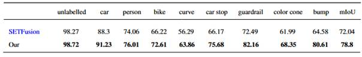
Figure 3: Comparison of the performance of
our method and SETFusion in semantic segmentation.
Compared to SETFusion, our method produces clearer fused images and
achieves higher quantitative metrics such as SD and VIF. Furthermore, when the
fused images generated by both methods are used for downstream semantic
segmentation, our method yields better segmentation results.
We have added, as
detailed in page 17-23 \ EXPERIMENTS.
Comment 5.2:
The qualitative analysis presents very few
samples, making it difficult to determine whether the results provide
convincing evidence or are based on manually selected examples. The authors
need to provide additional randomly selected visualization results.
Response 5.2:
We feel great
thanks for your professional review work on our article. Building on our
previous qualitative comparison, we have added the fusion results for MSRS test
set scene #00379D (Figure 4) and M3FD dataset scene #01079 (Figure 5). Both
figures present side-by-side comparisons of the infrared images, visible light
images, and the fusion results from each method, along with close-ups of the
same locations. We have also included a corresponding analysis in the revised
manuscript, comparing how well each method preserves pedestrian outlines,
vegetation textures, and roadside structural details across different scenes.
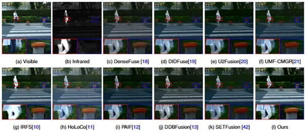
Figure 4: Qualitative comparison of our
method versus nine state-of-the-art fusion methods on scene #00379D within the
MSRS test dataset.
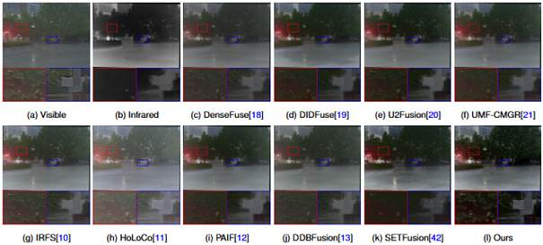
Figure 5:Visualization
output of different fusion methods on M3FD dataset with scene as #01079.
We have added, as
detailed in page 19 and 21\ EXPERIMENTS.
Comment 5.3:
What are the specific semantic priors
represented by P1�CP5 in Figure 8? How is this experiment conducted?
Response 5.3:
Thank you for your
suggestion. In this context,the
text prompt for P1 is “A dull image with a cluttered background and indistinct
or obscured objects”; the prompt for P2 is “A poorly captured image with noise,
blur, and no clear subject”; the prompt for P3 is “An image where the main
object is barely visible or obscured”; the prompt for P4 is “This is an
ordinary picture”; and the prompt for P5 is “A somewhat clear image with minor
noise and blur, but the main subject remains partially ambiguous”.
we adopted a backbone fusion architecture. For each group, we first used
a frozen CLIP text encoder to encode the corresponding prompt ( 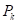 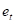
We have added, as
detailed in page 25 \ The Impact of Visual Language Semantic Priors on the
Fusion of Infrared and Visible Images\EXPERIMENTS.
Comment 5.4:
Equations (8) and (11) both use P^l. Please revise the notation, as this may lead
to confusion in the subsequent descriptions.
Response 5.4:
Thank you for your careful review. We have changed
the symbol 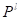 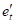
We have added, as
detailed in page 11 \A semantic modulation module guided by semantic priors
in visual language\EXPERIMENTS.
Comment 5.5:
Equation (10) consists of two parts. Why is the
first part multiplied by 10, while 10 is added in the second part? The authors
need to explain how this formulation is derived.
Response 5.5:
Thank you for pointing out this problem in manuscript. We have added an
explanation to the revised draft. Although both constants in Equation (10) are
set to 10, their mathematical roles are different. The first part multiplies
the input by 10 before the sigmoid activation to adjust the input scale, making
the activation function’s response steeper in the transition region. The second
part adds 10 to the sigmoid input to adjust the activation function’s offset,
rather than amplifying its input scale. These values are empirical.
We have added, as
detailed in page 12 \
A semantic modulation module guided by semantic priors in visual language\ Method.
Comment 5.6:
What semantic priors are used in the proposed
method? How are they defined? Please provide a detailed explanation.
Response 5.6:
We feel great thanks for your professional review work on our article.
The semantic priors we use consist primarily of two parts: task-level semantic
priors generated jointly by pre-trained prompt embeddings and the CLIP text
encoder, and response maps generated by the infrared and visible-light image
branches.
We use the task-level semantic priors generated jointly by pre-trained
prompt embeddings and the CLIP text encoder to express the overall quality
requirements for the fusion results. The specific text prompt is “a vivid image
with a clear background and obvious objects,” meaning we expect the fused image
to possess attributes such as vividness, a clear background, and prominent
objects.
Specifically, we first load the embedding parameters from the pre-trained
Prompt model and, in combination with the token sequence of the aforementioned
text prompt, extract text semantic features using the CLIP text encoder.
Subsequently, we average the encoding outputs to obtain a shared text vector,
which is then expanded to the current batch. During the fusion stage, both the
Prompt model and the text encoder remain frozen.
The extracted text vector undergoes feature mapping, reshaping, and
bilinear interpolation to be converted into a spatial condition map with the
same resolution as the input image. This condition map is added to the response
maps generated by the infrared and visible-light image branches to collectively
form the spatial modulation condition. It is then projected layer by layer into
three semantic embedding modulation modules to adjust the fusion features at
different levels.
Comment 5.7:
Figure 2 does not clearly illustrate the
relationships between the different modules in the proposed framework. Please
reorganize the framework diagram.
Response 5.7:
We gratefully
appreciate for your valuable suggestion comment. We have revised Figure 6 by
removing redundant information-transfer arrows to reduce visual clutter.
Additionally, we have changed “Gradient Structure Guidance” to “Text�CGradient
Guidance Features” and added the annotation “ 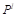
|
|
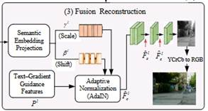 |
|
(a) Before the revision |
(b) After the revision |
Figure 6:
Schematic illustration of the changes made to Figure 2 in the revised draft.
We have added, as
detailed in page 8\ Overall
framework\ Method.
Comment 5.8:
Since the proposed method introduces many
additional parameters and modules, the authors need to verify whether the
performance improvements come from the predefined textual descriptions
(high-level semantics) or from the stronger learning capacity introduced by
these additional network parameters.
Response 5.8:
We totally understand the reviewer's concern. To analyze the impact of
high-level semantic guidance and fusion constraints on the final fusion
results, we examined the weights of these two types of loss terms in the total
loss function. The results indicate that the combined effect of these two types
of constraints promotes the generation of high-quality fused images. The
details are as follows:
To analyze the impact of these two parameters on the fusion results, we
fixed one parameter while adjusting the other, and retrained the model for each
set of settings. Specifically, we fixed 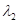 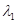 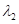
Figure 7: Visualization results of high-level
semantic guidance and fusion constraints under different weight settings.
As shown in Figure 7(a)�C(c), when = 0.1, the fused images under different 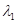 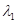 is increased from 0.1 to 1, 5, and 10,
abnormal bright spots and spurious textures appear in the images to varying
degrees, affecting the natural appearance of the road background and the
clarity of local structures. This suggests that, under the current loss
combination, increasing the semantic loss weight does not necessarily improve
fusion quality; overly strong semantic constraints may interfere with the
preservation of pixel and structural information.
is increased from 0.1 to 1, 5, and 10,
abnormal bright spots and spurious textures appear in the images to varying
degrees, affecting the natural appearance of the road background and the
clarity of local structures. This suggests that, under the current loss
combination, increasing the semantic loss weight does not necessarily improve
fusion quality; overly strong semantic constraints may interfere with the
preservation of pixel and structural information.
We have added, as
detailed in page 27\ Sensitivity
Analysis of Loss Weights\ EXPERIMENTS.
Comment 5.9:
Whether high-level semantic information
actually contributes to the performance improvements cannot be sufficiently
demonstrated through the current ablation studies alone. The authors need to provide
more semantic-related analyses, such as introducing noise perturbations,
replacing semantic priors with random semantics, or using randomly initialized
semantic representations.
Response 5.9:
Thank you for your valuable feedback on our manuscript. We agree with
your point. Therefore, we have added two sets of control experiments: random
semantic substitution and random initialization of semantic representations.
The details are as follows:
The Random Noise mask replaces the entire modulation mask directly with a
random tensor of the same size as the original mask. The value at each position
in the tensor is independently sampled from a uniform distribution on the
interval ([0,1)). This control is used to examine changes in fusion performance
after replacing the entire mask. In the Random Semantic Replacement (RandText) setting, a sentence is randomly selected from a
predefined set of task-agnostic image descriptions, such as “A vivid image of a
kitchen counter with clearly visible bowls, plates, and utensils.” This
description is encoded using a frozen CLIP text encoder, and the L2 norm of the
resulting vector is adjusted to match that of the original semantic vector,
which is then used to replace the original semantic prior.
As shown in Figure 8, in scene #00055D of the MSRS test set, when a
random noise mask is applied, the foreground road surface exhibits a fairly
noticeable grainy texture. When random semantic replacement is used, the
branches and leaves next to the tree trunk within the red box appear overly
bright, and the local contrast is reduced. In contrast, our method produces
smoother brightness transitions on the road surface, maintains clear boundaries
between the tree trunk and the background foliage, and preserves the outline of
the pedestrian within the blue box. These experiments demonstrate that the
choice of semantic priors directly affects the quality of the fused image and
also illustrate that text semantics can effectively guide the fusion process
between infrared and visible light images.
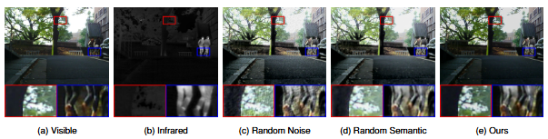
Figure 8：Comparison of fusion results for MSRS test set scene
#00055D (random noise masking, random semantic replacement, and our method)
We have added, as
detailed in page 28-29\ The
Impact of Semantic Priors on Fusion Performance\ EXPERIMENTS.
Comment 5.10:
Please explain how the global semantic
representation of text enables the model to distinguish different semantic
regions or selectively enhance specific targets. The authors should conduct
both quantitative and qualitative analyses and provide visualizations of the
network response maps.
Response 5.10:
We gratefully appreciate for your valuable suggestion comment. The global
text representation in this paper primarily expresses task quality preferences
such as clear objectives and distinct backgrounds; it does not itself contain
specific target locations or pixel-level semantic labels. Its role is to
generate a text-conditioned map through mapping, which is then combined with
the spatial responses generated by the input image branch to jointly
participate in the modulation of multi-layer fused features.
In this process, spatial information relevant to the current scene is
derived from the image branch. Through spatial adaptive normalization and
channel re-calibration, the joint conditions enable features from different
locations and channels to undergo differentiated modulation. Therefore, the
region-adaptive capability in this paper stems from the combination of text
conditions and image responses, rather than the global text vector
independently performing semantic region recognition.
Table
1 presents the results of a quantitative comparison between our method and five
different semantic text-guided methods (P1�CP5) on the MSRS test set. As can be
seen, our method performs best on four metrics: SD, VIF, EN, and Qabf. P1 achieved the highest values on the AG and SF
metrics, but this is primarily due to the presence of some blurriness and noise
in the generated images. Therefore, overall, our method outperforms the others.
The experimental results above demonstrate the effectiveness of text semantics
in our method.
Table 1: Shows the quantitative comparison results
between our method and five different semantic text guidance methods (P1 - P5)
on the MSRS test set.
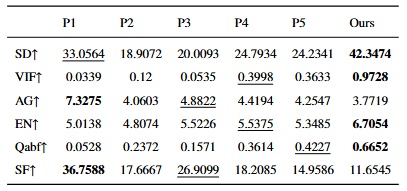
We
acknowledge that structural descriptions of the network alone are insufficient
to demonstrate that this modulation can selectively enhance the target. For
qualitative analysis, we will present feature response maps and response
difference maps before and after SEM1, SEM2, and SEM3 processing, and compare
the response distributions under the original text condition and the random
semantic condition. Comparisons across groups use the same input, fixed model
weights, and consistent display scales to observe whether changes in response
correspond to the target and structural regions. Specifically:
To visually analyze how visual language priors influence changes in the
spatial responses of decoded features during modulation, we performed a visual
comparison of the input and output features of the three semantic embedding
modules (SAMs) in the decoding stage. As shown in Figure 9, each test sample
displays six feature maps, corresponding to the features before and after
processing by SAM1, SAM2, and SAM3, respectively, to examine changes in spatial
responses at different decoding stages.
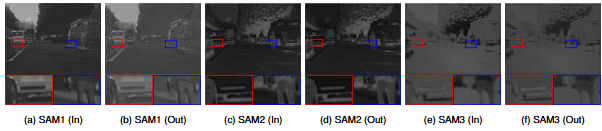
In the figure, we visually compare the input and
output features of the three SAM modules during the decoding stage. The red and
blue boxes highlight the vehicle front and pedestrian regions, respectively,
with corresponding local magnified views shown below. Comparing Figures 9(a)
and (b) reveals that the features processed by SAM1 exhibit different relative
grayscale distributions, with changes in the horizontal structure of the
vehicle front and the contrast between the pedestrian’s legs and the surrounding
background. In Figures 9(c) and (d), as well as Figures 9(e) and (f), the input
and output features are generally more similar; the road layout, vehicle
structure, and pedestrian contours remain consistent, with changes primarily
manifesting as subtle adjustments in local grayscale and edge responses. These
results indicate that SAM exhibits different modulation effects at different
decoding stages: the changes in response before and after SAM1 processing are
relatively intuitive, while SAM2 and SAM3 primarily adjust local responses
while preserving the existing spatial structure. The differences in the spatial
distribution of the input and output features across the three modules
demonstrate SAM’s ability to differentially modulate decoded features at
various locations, as well as the effectiveness of semantic priors in the
fusion process.
We have added, as
detailed in page 27\ Analysis
of Spatial Feature Modulation in the Semantic Embedding Module\ EXPERIMENTS and page 26\ The
Impact of Visual Language Semantic Priors on the Fusion of Infrared and Visible
Images \ EXPERIMENTS.
Comment 5.11:
What is the specific role of the gradient
prediction network? How is it trained? Please provide a detailed description of
its supervision mechanism and compare its advantages with those of conventional
gradient operators.
Response 5.11:
Thank you for pointing out this problem in manuscript. The gradient
prediction network primarily provides guidance for spatial feature modulation.
This branch takes infrared and visible-light images as inputs, respectively,
and generates single-channel response maps through multi-layer convolutions,
nonlinear transformations, and residual connections. Subsequently, we transform
the response maps and combine them with the text condition map to adjust fusion
features at different levels. Its output continues to participate in subsequent
fusion processes rather than serving as an independent edge detection result.
During the fusion training phase, the gradient prediction network serves
as an auxiliary branch of the fusion network and is trained jointly with the
fusion backbone. During training, the spatial responses generated by this
branch are combined with text conditions to modulate multi-layer fusion
features, ultimately producing a fused image. The training objective consists
of intensity preservation, gradient structure, and semantic constraints; the
loss is backpropagated through the feature modulation path to update the
gradient prediction network and other trainable modules.
Traditional operators such as Sobel estimate image grayscale gradients
through fixed differential filtering; their computations are well-defined and
do not require training. In contrast, our CNN branch generates spatial
responses through multi-layer nonlinear transformations, providing an
intermediate representation for the collaborative modulation of text conditions
and image information. Therefore, the distinction between the two lies
primarily in how the responses are constructed and how they participate in the
fusion process.